Types of Dere's
Tsundere
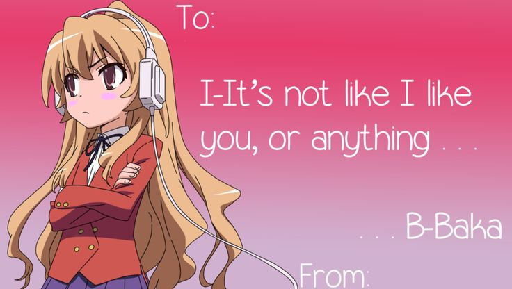
Treats the one they love poorly.
Possibly causes physical harm.
When embarrassed will call them stupid/baka.
Yandere
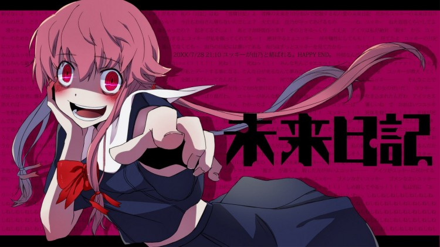
Starts out nice and sweet but eventually becomes dark and obsessive.
Will stalkers and use violence to be close to love interest.
Will harm or murder any person who gets close to their love interest.
Bakadere
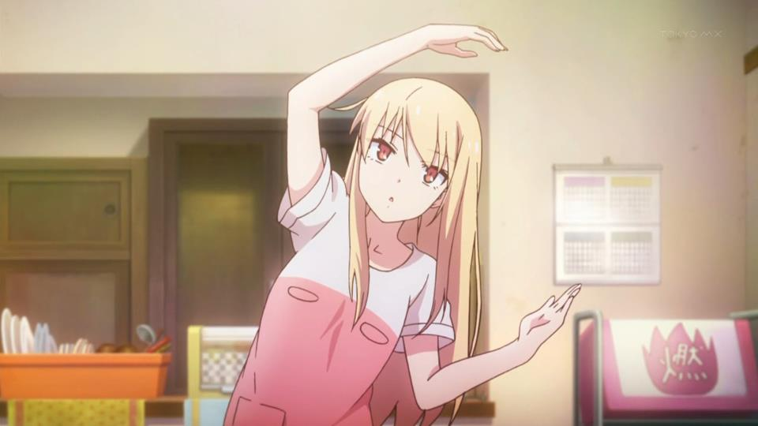
Very clumsy and stupid.
For the most part they’re very innocent and sweet.
Dandere
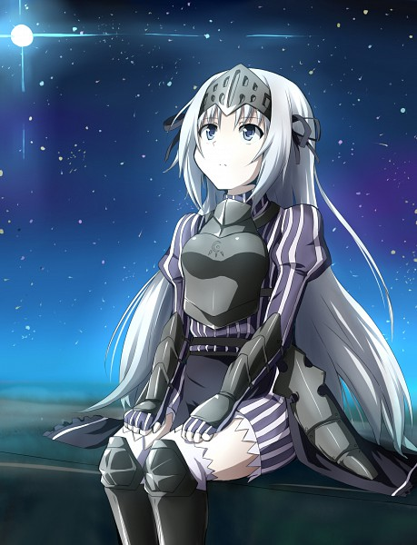
Often silent and keeps to themselves.
When alone with the person they are attracted to, they usually come out of their shell and become more loving.
Hajidere
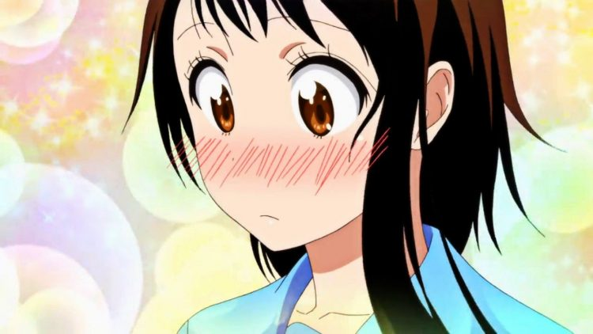
Is very nervous and embarrassed around their crush.
Will easily blush near their love interest, and might even feint from being so bashful.
Kamidere
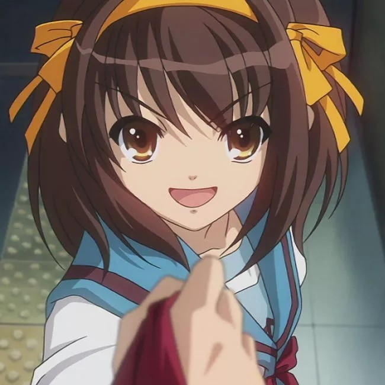
Has a god complex.
Highly arrogant and proud.
Aren’t afraid to speak their minds and show everyone how right they are.
Himedere
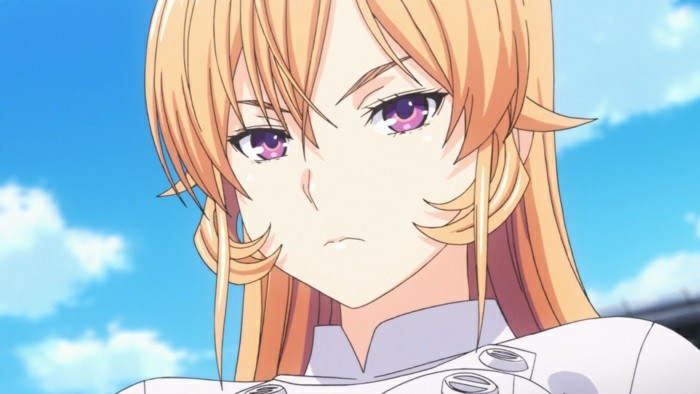
Wishes to be treated like a princess.
Even if they aren’t royalty.
Deredere
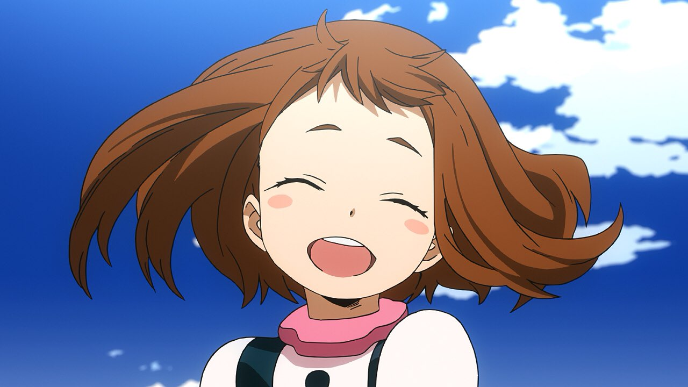
Is completely kind, happy, and energetic.
No matter what may happen, they quickly revert to their cheerful self.
Kuudere
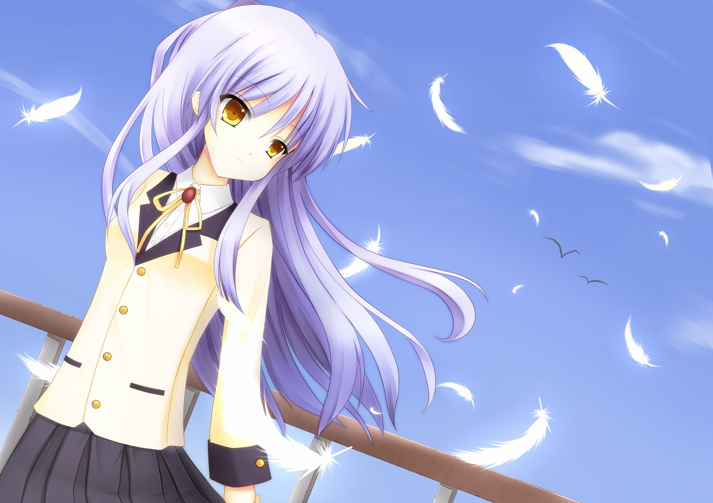
Is often cold, blunt, and cynical.
May seem very emotionless on the outside, but on the inside they’re very caring.
Byoukidere
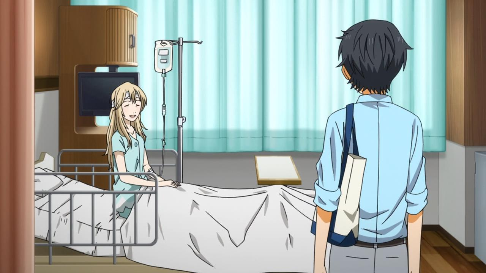
Is kind and gentle at heart but has a serious illness.
They might be confined to a hospital bed, or is just simply weak and frail.
Nyandere
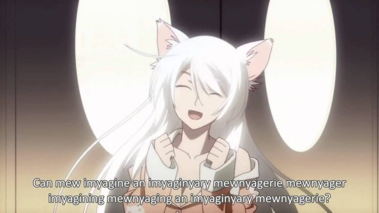
Has many cat like attributes.
Adds “nyan” in their sentences.
Bukako
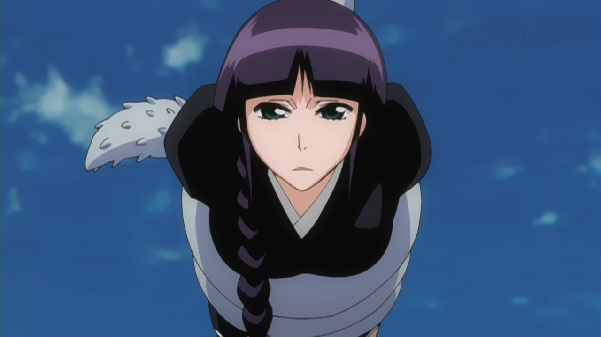
Subservient to thier master.
Always at there master's side.
Almost always has an emotionless expression.
Teasedere
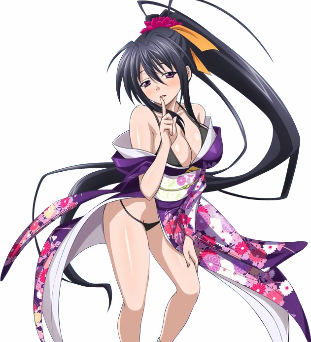
Are mischievous at heart and sort of like a flirt as they tease people they like.
They care a lot for their loved one, and tease them even more.
They like to toy around with their love interest.